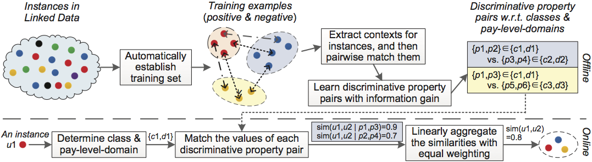

Wei Hu*, Rui Yang, Yuzhong Qu. Automatically Generating Data Linkages Using Class-Based Discriminative Properties. Data and Knowledge Engineering, 91: 34-51, 2014
A challenge for Linked Data is to link instances from different data sources that denote the same real-world object. Millions of high-quality owl:sameAs linkages have been generated, but potential ones are still considerable. Traditional similarity-based methods to this data linkage problem do not scale well since they exhaustively compare every pair of instances. In this paper, we propose an automatic approach to data linkage generation for Linked Data. Specifically, a highly-accurate training set is automatically generated based on equivalence reasoning and common prefix blocking. The contexts of the instances in the training set, after extracting, are pairwise matched in order to learn discriminative property pairs supporting linkage discovery. For a particular class pair and a pay-level-domain pair, the discriminability of each property pair is measured, and a few property pairs with high discriminability are aggregated in order to be reused in the future to link instances between the same classes and domains. The experimental results show that our approach achieves good accuracy against some complex methods in two OAEI tests and the BTC2011 dataset.
A challenge for Linked Data is to link instances from different data sources that denote the same real-world object. Millions of high-quality owl:sameAs linkages have been generated, but potential ones are still considerable. Traditional similarity-based methods to this data linkage problem do not scale well since they exhaustively compare every pair of instances. In this paper, we propose an automatic approach to data linkage generation for Linked Data. Specifically, a highly-accurate training set is automatically generated based on equivalence reasoning and common prefix blocking. The contexts of the instances in the training set, after extracting, are pairwise matched in order to learn discriminative property pairs supporting linkage discovery. For a particular class pair and a pay-level-domain pair, the discriminability of each property pair is measured, and a few property pairs with high discriminability are aggregated in order to be reused in the future to link instances between the same classes and domains. The experimental results show that our approach achieves good accuracy against some complex methods in two OAEI tests and the BTC2011 dataset.
Methodologies

We propose an automatic approach, called ADL, which differs from current similarity-based methods in learning a set of important properties for disambiguating instances (referred to as discriminative properties). The methodological steps of ADL can be divided into the offline part and the online part:
- For the offline learning, a highly-accurate training set is automatically established. The training set consists of two sets of instance pairs holding the linkages or not, referred to as positive examples and negative examples, resp. The contexts (i.e., a kind of integrated units over RDF triples) for the instances in the training set are extracted in terms of RDF sentences, and pairwise matched with a lightweight linguistic matcher V-Doc, in order to discover discriminative property pairs, where a discriminative property pair consists of two matchable properties discriminative to link instances. For a specific class pair and a pay-level-domain pair, the discriminability of each property pair is measured by information gain, revealing the global and implicit preference of data publishers on characterizing a type of objects.
- For the online linking, given a new instance as input, the class that it belongs to and its pay-level-domain are firstly extracted, and then the counterparting classes and pay-level-domains in the training set are chosen. The instances, with the properties in the related discriminative property pairs, are found out, and their values are matched with that of the input using V-Doc. The similarities from different discriminative property pairs are linearly aggregated with equal weighting, in order to determine whether to generate an instance linkage.